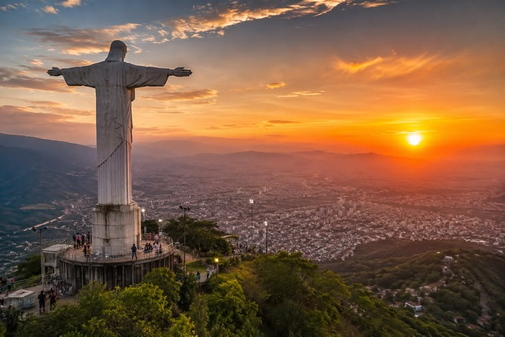

Historia, cultura y alma de la capital mundial de la salsa
Fundada en 1536, el tren de 1915, la llegada de la salsa, Jovita Feijóo y las palabras que solo se dicen en Cali.
ExplorarLa Feria, el Salsódromo, Semana Santa, bodas, velorios y los roles de la comunidad.
ExplorarLa Ermita, San Antonio, la Torre de Cali, los Farallones, el río Pance y la capital de las aves.
ExplorarCali es Cali, lo demás es loma.